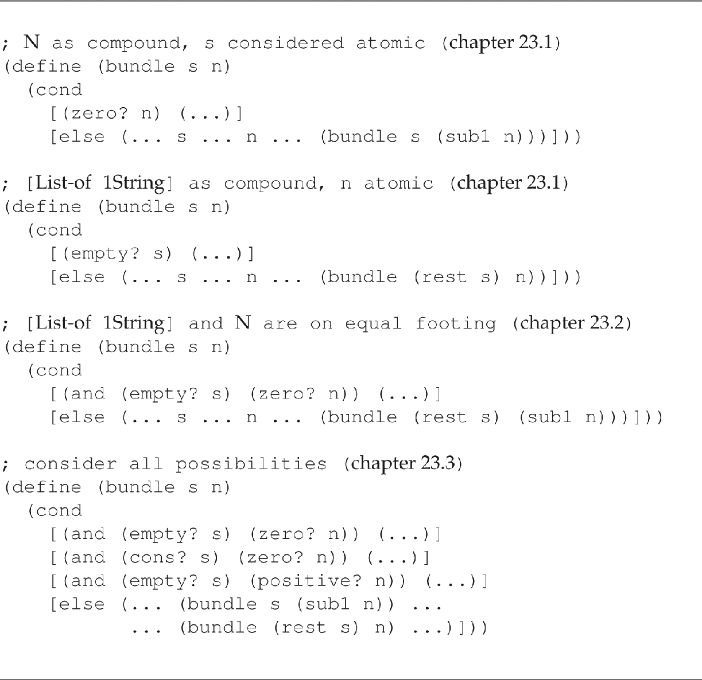
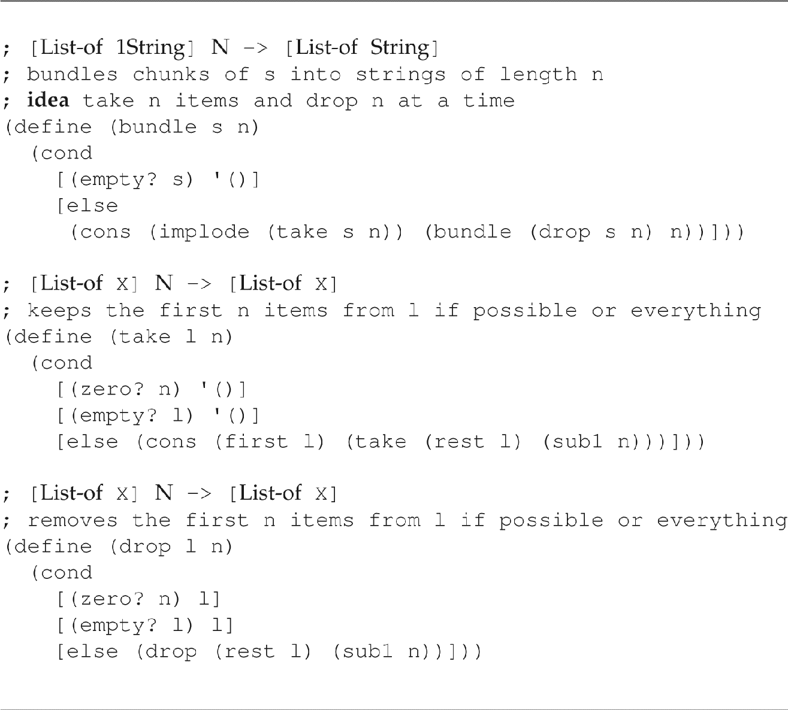

25.1 Recursion without Structure
Imagine you have joined the DrRacket team. The team is working on a sharing service to support collaborations among programmers. Concretely, the next revision of DrRacket is going to enable ISL programmers to share the content of their DrRacket’s definitions area across several computers. Each time one programmer modifies the buffer, the revised DrRacket broadcasts the content of the definitions area to the instances of DrRacket that participate in the sharing session.
Sample Problem Your task is to design the function bundle, which prepares the content of the definitions area for broadcasting. DrRacket hands over the content as a list of 1Strings. The function’s task is to bundle up chunks of individual “letters” into chunks and to thus produce a list of strings—called chunks—of a given length, called chunk size.
As you can see, the problem basically spells out the signature and there is no need for any problem-specific data definition:
; [List-of 1String] N -> [List-of String]
; bundles chunks of s into strings of length n
(define (bundle s n)
'())
The purpose statement reformulates a sentence fragment from the problem statement and uses the parameters from the dummy function header.
The third step calls for function examples. Here is a list of 1Strings:
(list "a" "b" "c" "d" "e" "f" "g" "h")
If we tell bundle to bundle this list into pairs—that is, n is 2—then the following list is the expected result:
(list "ab" "cd" "ef" "gh")
Now if n is 3 instead, there is a left-over “letter.” Since the problem statement does not tell us which of the characters is left over, we can imagine at least two valid scenarios:
• The function produces (list "abc" "def" "g"); that is, it considers the last letter as the left-over one.
• Or, it produces (list "a" "bcd" "efg"), which packs the lead character into a string by itself.
Stop! Come up with at least one other choice.
To make things simple, we pick the first choice as the desired result and say so by writing down a corresponding test:
Note the use of explode; it makes the test readable.
Examples and tests must also describe what happens at the boundary of data definitions. In this context, boundary clearly means bundle is given a list that is too short for the given chunk size:
(check-expect (bundle '("a" "b") 3) (list "ab"))
It also means we must consider what happens when bundle is given '(). For simplicity, we choose '() as the desired result:
(check-expect (bundle '() 3) '())
One natural alternative is to ask for '(""). Can you see others?
The template step reveals that a structural approach cannot work. Figure 146 shows four possible templates. Since both arguments to bundle are complex, the first two consider one of the arguments atomic. That clearly cannot be the case because the function has to take apart each argument. The third template is based on the assumption that the two arguments are processed in lockstep, which is close—except that bundle clearly has to reset the chunk size to its original value at regular intervals. The final template says that the two arguments are processed independently, meaning there are four possibilities to proceed at each stage. This final design decouples the arguments too much because the list and the counting number must be processed together. In short, we must admit that the structural templates appear to be useless for this design problem.

Figure 146: Useless templates for breaking up strings into chunks
Figure 147 shows a complete definition for bundle. The definition uses the drop and take functions requested in exercise 395; these functions are also available in standard libraries. For completeness, the figure comes with their definitions: drop eliminates up to n items from the front of the list, take returns up to that many items. Using these functions, it is quite straightforward to define bundle:
1. if the given list is '(), the result is '() as decided upon;
2. otherwise bundle uses take to grab the first n 1Strings from s and implodes them into a plain String;
3. it then recurs with a list that is shortened by n items, which is accomplished with drop; and
4. finally, cons combines the string from 2 with the list of strings from 3 to create the result for the complete list.

Figure 147: Generative recursion
List item 3 highlights the key difference between bundle and any function in the first four parts of this book. Because the definition of List-of conses an item onto a list to create another one, all functions in the first four parts use first and rest to deconstruct a non-empty list. In contrast, bundle uses drop, which removes not just one but n items at once.
While the definition of bundle is unusual, the underlying ideas are intuitive and not too different from the functions seen so far. Indeed, if the chunk size n is 1, bundle specializes to a structurally recursive definition. Also, drop is guaranteed to produce an integral part of the given list, not some arbitrarily rearranged version. And this idea is precisely what the next section presents.
Exercise 421. Is (bundle '("a" "b" "c") 0) a proper use of the bundle function? What does it produce? Why? 
Exercise 422. Define the function list->chunks. It consumes a list l of arbitrary data and a natural number n. The function’s result is a list of list chunks of size n. Each chunk represents a sub-sequence of items in l.
Use list->chunks to define bundle via function composition.
Exercise 423. Define partition. It consumes a String s and a natural number n. The function produces a list of string chunks of size n.
For non-empty strings s and positive natural numbers n,
(equal? (partition s n) (bundle (explode s) n))
is #true. But don’t use this equality as the definition for partition; use substring instead.
Hint Have partition produce its natural result for the empty string. For the case where n is 0, see exercise 421.
Note The partition function is somewhat closer to what a cooperative DrRacket environment would need than bundle.